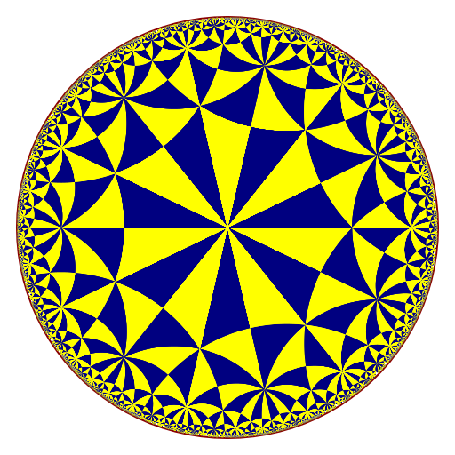
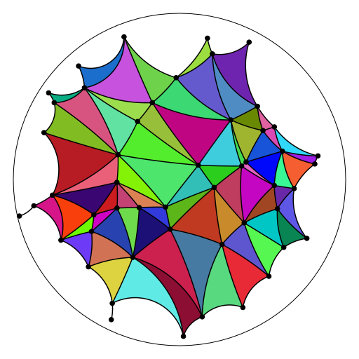

Update of 'gyro'
I updated the gyro package (soon on CRAN). Here are the new features.
Hyperbolic polyhedra in the Poincaré model
The previous version of the package only dealt with hyperbolic polyhedra in the Minkowski model. Now it is possible to get hyperbolic polyhedra in the Poincaré model. I don’t provide some example, because they look similar to the polyhedra in the Minkowski model (see this post). I prefer the Minkowski model because one can change the hyperbolic curvature in this model.
Hyperbolic tilings of the Poincaré disk
The package now provides the tiling function, which draws a hyperbolic
tiling of the Poincaré disk.
library(gyro)
tiling(7, 4, depth = 4, border = "darkred", lwd = 2)
Hyperbolic Delaunay tessellations
The package now provides the hdelaunay function, which constructs a
hyperbolic Delaunay triangulation in the Poincaré disk thanks to the C++
library CGAL, and the plotHdelaunay function, which plots such a
triangulation.
Unfortunately, this new feature will not be included in the CRAN version, because of a C++ issue spotted by Valgrind. If you want to use it, you have to install the hdelaunay branch of the Github repo:
remotes::install_github("stla/gyro@hdelaunay", build_vignettes = TRUE)Here is a first example:
library(gyro)
library(uniformly)
set.seed(666)
points <- runif_in_sphere(50L, d = 2)
hdel <- hdelaunay(points)
plotHdelaunay(hdel, color="random", luminosity="bright")
Actually the faces of the hyperbolic Delaunay triangulation are the same as the ones of the Euclidean Delaunay triangulation, except that they are hyperbolic, up to this point: as you can see on the above plot, there are some edges without incident face; this occurs when the circumcircle of the missing Euclidean Delaunay face is not contained in the unit disk.
Here is a second example, not random:
library(gyro)
library(trekcolors)
phi <- (1 + sqrt(5)) / 2
theta <- head(seq(0, pi/2, length.out = 11L), -1L)
a <- phi^((2*theta/pi)^0.8 - 1)
u <- a * cos(theta)
v <- a * sin(theta)
x <- c(0, u, -v, -u, v)
y <- c(0, v, u, -v, -u)
pts <- cbind(x, y) / 1.03
hdel <- hdelaunay(pts, centroids = TRUE, exact = TRUE)
fcolor <- function(t){
RGB <- colorRamp(trek_pal("klingon"))(t)
rgb(RGB[, 1L], RGB[, 2L], RGB[, 3L], maxColorValue = 255)
}
plotHdelaunay(
hdel, vertices = FALSE, circle = FALSE, color = fcolor
)